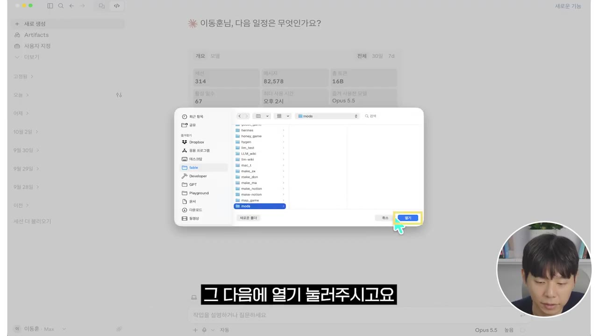
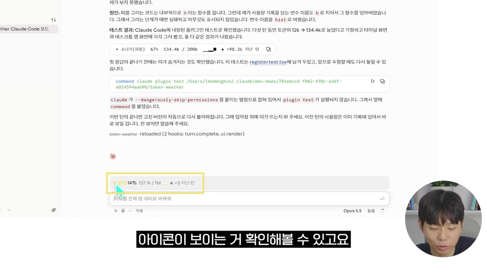
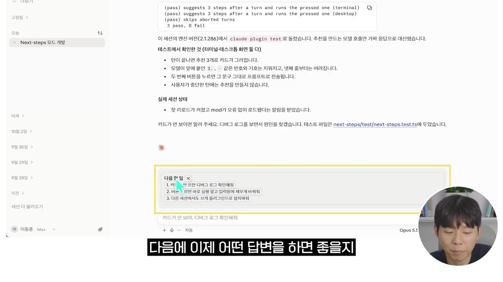
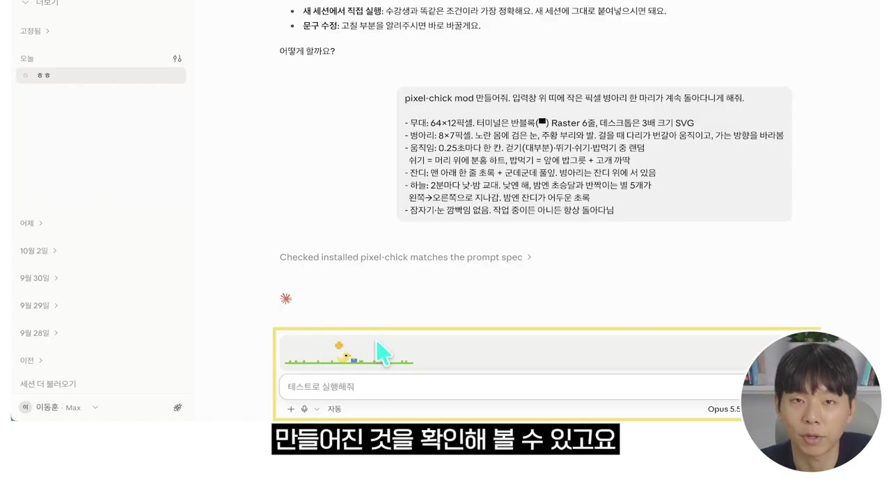
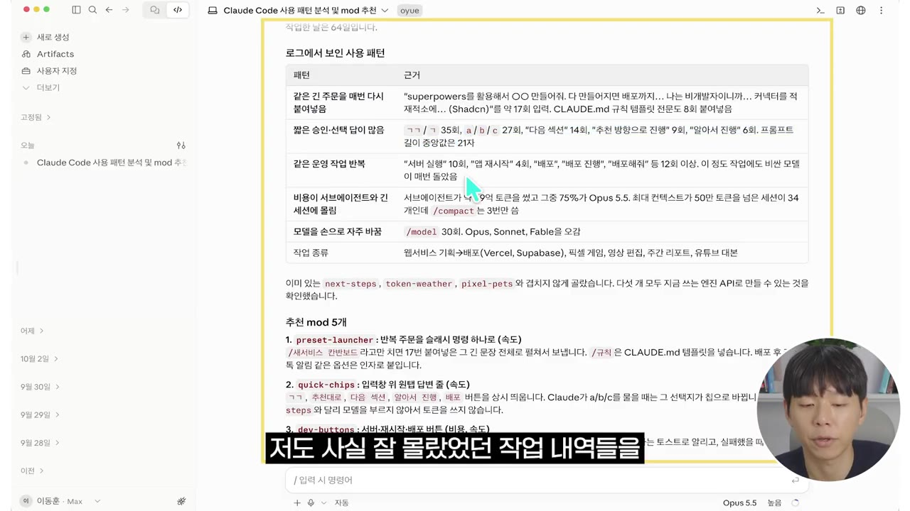

클로드 코드 모드(Mods) A to Z, 10분 만에 쉽게 알려드립니다 (26년 10월 최신)
▶ 원본 영상 보기한눈에 보기
- 클로드 코드 '모드(Mods)'는 클로드 코드의 화면 모양과 동작 방식을 바꾸는 작은 프로그램입니다. 정보창, 확인 버튼, 나만의 명령어를 추가할 수 있습니다.
- 클로드는 파일 읽기, 명령 실행, 화면 그리기 같은 동작을 할 때마다 신호를 보냅니다. 모드는 이 신호를 듣고 지켜보거나, 살짝 고치거나, 대신 처리합니다.
- 모드는 원래 TypeScript로 짜야 하지만, 모드 제작 전용 스킬이 들어 있어서 말로 설명만 하면 클로드가 만들고 테스트까지 합니다.
- 실습은 4가지입니다. 토큰 사용량 날씨 모드, 다음 작업 추천 모드, 픽셀 병아리 모드, 내 사용 기록을 분석해 모드 5개를 추천받는 방법입니다.
- 만든 모드는 지금 대화에서만 쓸 수 있습니다. "플러그인으로 설치해 줘"라고 한 번 더 요청하면 모든 세션에서 쓸 수 있습니다.
이런 분께 도움이 됩니다
- 클로드 코드를 쓰는데 기본 기능만으로는 아쉬운 분
- 코딩 없이 말로만 나만의 화면·버튼·명령어를 만들고 싶은 분
- 내 작업 습관에 맞춰 반복 작업과 토큰 비용을 줄이고 싶은 분
핵심 내용
모드란? (0:54)
모드는 클로드 코드의 보이는 모습과 행동 방식을 바꾸는 작은 프로그램입니다. 게임 모드를 깔면 같은 게임이 다른 게임이 되는 것처럼, 화면·버튼·행동 방식을 내 마음대로 바꿀 수 있습니다.
- 할 수 있는 일의 예
- 클로드가 일할 때 옆에 원하는 정보창 띄우기
- 위험한 작업 전에 "진짜 할까요?" 확인 버튼 띄우기
- 나만의 명령어 추가하기
- 일정: 2026년 9월 일부 개발자에게 먼저 공개해 테스트했고, 10월 1일 Anthropic이 공식 발표했습니다.
작동 원리: 클로드는 파일을 읽을 때, 명령을 실행할 때, 화면을 그릴 때마다 "지금 이거 해요"라는 신호를 보냅니다. 모드는 이 신호를 듣고 있다가 셋 중 하나를 합니다.
| 반응 | 뜻 |
|---|---|
| 지켜보기 | 신호만 받아서 정보 표시 등에 활용 |
| 살짝 고치기 | 클로드의 동작을 일부 바꾸기 |
| 대신 처리하기 | 그 동작을 모드가 직접 처리하기 |
스킬·MCP와 다른 점 (1:48)
| 구분 | 방식 | 할 수 있는 것 |
|---|---|---|
| 스킬·MCP | 바깥에서 클로드에게 지식이나 도구를 건넴 | 능력 추가 |
| 모드 | 클로드 코드 안에 들어가 작업 환경 자체를 바꿈 | 창 띄우기, 버튼 만들기 등 화면·동작 변경 |
모드는 원래 TypeScript(프로그래밍 언어)로 짭니다. 하지만 클로드 코드 안에 모드 제작 전용 스킬이 있어서, 원하는 것을 말로 설명하면 클로드가 만들고 실행하고 테스트까지 해 줍니다.
💡 창과 버튼을 만드는 일은 모드로만 할 수 있습니다. 그런데도 코딩은 필요 없습니다.
실습 준비: 데스크톱 앱과 프로젝트 폴더 (2:34)
터미널이 낯선 분이 많아서 Claude Code 데스크톱 앱으로 진행합니다. 클로드 코드는 폴더 단위로 작업하기 때문에 프로젝트 폴더부터 만듭니다(자세한 순서는 아래 따라 해보기).

실습 1: 토큰 사용량 날씨 모드 (3:23)
Anthropic 공식 문서에 나온 예시 프롬프트를 바탕으로 '토큰 웨더(Token Weather)' 모드를 만듭니다. 토큰(AI가 처리하는 글자 단위, 사용량과 비용의 기준)을 얼마나 썼는지 숫자만이 아니라 날씨 아이콘으로 보여 주게 기능을 덧붙여 요청합니다.
- 만들고 나면
Enable hot reloading for this session버튼이 뜹니다. 원래는 모드를 설치한 뒤 데스크톱 앱을 다시 켜야 합니다. 이 버튼을 누르면 재시작 없이 지금 대화에 바로 적용됩니다(핫 리로딩). - 결과: '맑음' 같은 창과 아이콘이 뜨고, 컨텍스트 윈도우(한 대화에서 AI가 기억할 수 있는 양)를 몇 % 썼는지 바로 보입니다. 이 값은 우측 하단 버튼의 컨텍스트 윈도우 표시와 같고, 이전에 얼마나 썼는지도 한눈에 볼 수 있습니다.

모든 세션에서 모드 쓰기 (4:53)
방금 만든 모드는 지금 대화창에서만 쓸 수 있습니다. 다른 대화나 다른 프로젝트에서도 쓰려면 "플러그인으로 설치해 줘"라고 한 번 더 요청하면 됩니다(입력 내용은 아래 따라 해보기).
실습 2: 다음 작업 추천 모드 (5:17)
'넥스트 스텝(Next Step)' 모드는 클로드 답변(턴)이 끝날 때마다 작은 카드를 띄웁니다. 카드에는 클로드가 방금 한 일을 바탕으로 다음에 할 일 3가지가 추천되고, 클릭하면 바로 실행됩니다.
- 똑같이 핫 리로드를 켜고 "잘되는지 확인해 줘"라고 요청합니다.
- 결과: 입력창 위에 추천 카드가 뜨고, 하나를 고르면 바로 적용됩니다.
- 응용: 카드 디자인이나 추천 방식을 바꿔 달라고 이어서 요청하면 됩니다.
💡 다음 할 말을 직접 쓰는 시간이 줄어듭니다.

실습 3: 픽셀 병아리 모드 (6:27)
재미용 모드입니다. '픽셀 칙(Pixel Chick)' 모드는 입력창 위에서 픽셀 병아리가 계속 돌아다니는 게임 같은 화면을 만듭니다. 프롬프트에는 병아리의 움직임, 잔디, 하늘, 잠자기 같은 규칙을 적어 넣었습니다.
- 결과: 프롬프트 입력창 위에 병아리가 나타나고, 적어 준 규칙대로 움직입니다.
- 응용: 병아리 대신 고양이(자막상 "고향", 불분명)로 바꾸거나 먹이 주기, 잠자기 기능을 더해 보라고 추천합니다.

실습 4: 내 사용 패턴으로 모드 추천받기 (7:22)
지금까지는 영상이 준 프롬프트로 만들었다면, 이번에는 내 사용 기록을 분석해 나에게 맞는 모드를 추천받습니다.
- 요청 내용: 클로드 코드 세션 로그를 최대한 많이 훑어보고, 내가 클로드 코드를 어떻게 쓰는지, 자주 반복하는 말이나 작업이 무엇인지 파악해 달라고 합니다. 그 결과를 바탕으로 흐름을 돕고, 돈을 아끼고, 더 빠르게 일하게 해 줄 모드 5개를 추천해 달라고 합니다.
- 결과: 사용 패턴과 근거가 정리되어 나옵니다. 본인도 몰랐던 작업 습관을 확인할 수 있습니다.
- 영상에서 추천받은 모드 예시
- 반복해서 쓰는 슬래시 명령들을 명령 하나로 묶는 모드
- 서버 재시작·배포 버튼 모드
- 컨텍스트가 50%를 넘으면 알아서 정리해 주는 모드
- 마음에 드는 것이 있으면 "4번 만들어 줘"처럼 번호로 요청하면 앞의 실습처럼 만들어 줍니다.

따라 해보기
준비물
- Claude Code 데스크톱 앱(로그인된 상태). 요금제 조건은 영상에 나오지 않음
- 실습용 빈 폴더 하나(이름은 자유)
- 소요 시간: 모드 하나에 몇 분 정도(영상 기준)
단계별 방법
- 코드 탭 열기
- 프로젝트 폴더 지정
- 모드 요청 입력
- 핫 리로딩 켜기
- 동작 확인 요청
- 플러그인으로 설치
- 1코드 탭 열기
Claude Code 데스크톱 앱을 실행하고 좌측 상단 코드(Code) 탭을 누릅니다. (2:55)
- 2프로젝트 폴더 지정
로컬(Local) 옆 버튼 → 폴더 열기 → 탐색기에서 새 폴더를 만들고(이름 자유) 열기를 누릅니다. (3:05)
- 3모드 요청 입력
만들고 싶은 모드를 말로 설명하고 Enter를 누릅니다. 아래 프롬프트 요지를 참고합니다. (3:28)
- 4핫 리로딩 켜기
완성 후 뜨는
Enable hot reloading for this session을 누릅니다. 재시작 없이 지금 대화에 적용됩니다. (3:52) - 5동작 확인 요청
"잘 보이는지 확인해 줘"라고 입력합니다. 핫 리로딩이 실행되고 모드가 화면에 나타납니다. (4:15)
- 6플러그인으로 설치
다른 대화·프로젝트에서도 쓰려면 아래 문장을 입력합니다. (5:01)
3단계에 입력할 내용 (화면 속 원문은 자막에 다 나오지 않아 요지만 적었습니다. 원문은 설명란 오픈채팅방 강의 자료에 있습니다.)
토큰 웨더(Token Weather) 모드를 만들어 줘.
토큰을 얼마나 썼는지 날씨 아이콘으로 시각적으로 보여 줘.
넥스트 스텝(Next Step) 모드를 만들어 줘.
턴이 끝날 때마다 작은 카드를 띄워서, 방금 한 일을 바탕으로 다음에 할 일 3가지를 추천하고,
클릭하면 바로 실행되게 해 줘.
픽셀 칙(Pixel Chick) 모드를 만들어 줘.
입력창 위에서 픽셀 병아리가 계속 돌아다니게 해 줘.
(움직임, 잔디, 하늘, 잠자기 등의 규칙을 적기)
클로드 코드 세션 로그를 최대한 많이 훑어보고, 내가 클로드 코드를 어떻게 쓰는지,
자주 반복하는 말이나 작업이 무엇인지 파악해 줘.
그걸 바탕으로 내 흐름을 돕고, 돈을 아끼고, 더 빠르게 일할 수 있게 해 주는 모드 5개를 추천해 줘.
6단계에 입력할 내용
방금 만든 모드를 내 모든 세션에서 쓸 수 있도록 플러그인으로 설치해 줘
따라 할 수 있는지 점검
- ✅ 바로 따라 할 수 있음: 1·2단계(폴더 열기), 4단계(핫 리로딩), 5단계(확인 요청), 6단계(플러그인 설치 문장)
- ⚠️ 3단계 「모드 요청 입력」: 영상 속 프롬프트 원문이 자막에 다 나오지 않습니다(특히 토큰 웨더의 아이콘 규칙, 병아리의 세부 규칙). → 영상 3:28·5:40·6:40 화면을 확인하거나 설명란 오픈채팅방 강의 자료를 받으세요. 토큰 웨더는 Anthropic 공식 문서 예시라고 하니 공식 문서에서 "Mods"를 검색해도 됩니다(보충).
- ⚠️ 시작 전: 모드 기능을 쓰는 데 필요한 앱 버전이나 요금제 조건이 영상에 나오지 않습니다. → 데스크톱 앱을 최신 버전으로 업데이트한 뒤 시작하세요(보충).
- ❓ 플러그인으로 설치한 모드를 끄거나 지우는 방법은 영상에 나오지 않습니다.
확인 방법
- 토큰 웨더: 날씨 창에 표시되는 컨텍스트 사용률이 우측 하단 컨텍스트 윈도우 표시와 같으면 정상입니다.
- 넥스트 스텝: 답변이 끝날 때마다 추천 카드 3개가 뜨고, 클릭하면 바로 실행되면 정상입니다.
- 픽셀 칙: 입력창 위에 병아리가 나타나 적어 준 규칙대로 움직이면 정상입니다.
- 플러그인: 새 대화나 다른 프로젝트를 열었을 때 모드가 보이면 정상입니다.
막히면
- 만들었는데 화면에 안 보이면 핫 리로딩을 켰는지 확인하세요. 켜지 않았다면 데스크톱 앱을 다시 시작해야 적용됩니다.
- 다른 대화에서 모드가 안 보이면 정상입니다. 처음 만든 모드는 그 대화 전용이므로 6단계(플러그인 설치)를 하세요.
기억할 숫자·인용
- 2026년 9월: 일부 개발자에게 먼저 공개 / 10월 1일: Anthropic 공식 발표
- 모드가 신호에 반응하는 방식 3가지: 지켜보기 · 살짝 고치기 · 대신 처리하기
- 모드 작성 언어: TypeScript (전용 스킬 덕분에 말로 만들 수 있음)
- 추천 모드 예시: "컨텍스트 50%가 넘으면 알아서 정리"
- "모드는 클로드 코드가 보이는 모습과 행동 방식을 바꾸는 작은 프로그램입니다."
생각해볼 점
- (내 의견) 실습 4는 세션 로그를 최대한 많이 읽게 하는 요청이라 토큰을 많이 쓸 수 있습니다. 로그에 민감한 내용이 있을 수 있으니, 읽을 범위를 최근 몇 주나 특정 프로젝트로 좁혀 요청하는 편이 안전합니다.
- (내 의견) 모드는 클로드의 동작을 "대신 처리"할 수도 있습니다. 남이 만든 모드나 클로드가 만든 모드를 모든 세션에 플러그인으로 설치하기 전에, 어떤 동작을 가로채는지 한 번 물어보고 확인하는 것이 좋습니다.
- (영상 한계) 데스크톱 앱 기준이라 터미널(CLI)에서 쓰는 방법과 모드를 끄거나 지우는 방법은 다루지 않습니다.
바로 해볼 일
- 데스크톱 앱에서 빈 폴더를 열고 토큰 웨더 모드를 만든 뒤 핫 리로딩으로 적용해 보기
- 마음에 드는 모드 하나를 "모든 세션에서 쓸 수 있도록 플러그인으로 설치해 줘"로 설치하기
- 최근 사용 기록 범위를 정해 "모드 5개 추천" 프롬프트를 돌려 보고, 하나를 번호로 골라 만들어 보기